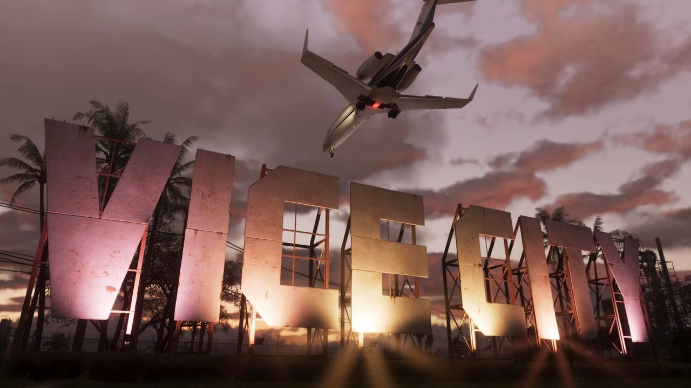
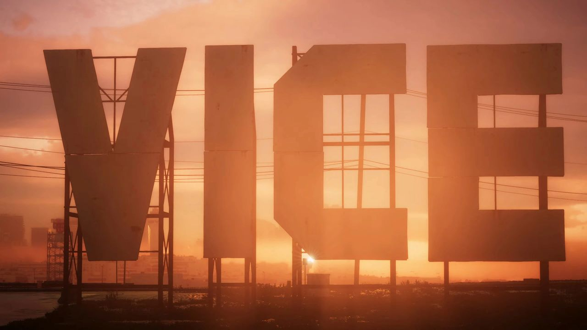

© Rockstar Games / Take-Two Interactive — image officielle de GTA VI (capture officielle), via GTA Wiki.
Aéroport international de Vice City (VCI)
Fiabilité Les premiers extraits de l'aéroport viennent des fuites de septembre 2022 (non officiel) ; il a ensuite été montré dans la bande-annonce 1 et sur le site officiel.
L'aéroport international de Vice City (code IATA : VCI) est le principal aéroport international du comté de Vice-Dale. Il se trouve dans une zone non constituée en commune du comté, sur le continent de Vice City, près du centre-ville. C'est un grand aéroport, desservi par les autoroutes, proche d'hôtels, avec son propre système de transport automatique.
Galerie

© Rockstar Games / Take-Two Interactive — images officielles de GTA VI (bandes-annonces, captures, site officiel), via GTA Wiki.
Comment on le connaît
- Fuites de septembre 2022 (non officiel) : on voit des morceaux de piste et des hangars de la société d'aviation privée Autograph. Les rames du métro de l'aéroport apparaissent à part, garées à côté de celles du Vice City Metro Mule.
- Bande-annonce 1 : le radar et les tours de contrôle sont visibles derrière le panneau Vice City.
- Site officiel : une capture montre un Shamal en train d'atterrir.
Histoire dans la série
Dans GTA IV, un touriste de Broker aurait payé une fortune à la sécurité de l'aéroport pour faire passer un crocodile à Liberty City. Un article du Liberty Tree de 2008 raconte aussi qu'un pilote d'Air Sol en état d'ébriété aurait failli tuer 200 passagers sur un vol Vice City – Francis International Airport.
Inspiration réelle
L'aéroport est basé sur l'aéroport international de Miami (MIA), par son nom, sa position et sa conception. La tour de contrôle de la bande-annonce 1 en est une copie, et son transport automatique rappelle le MIA Mover. Les hangars bleus des fuites semblent s'inspirer de ceux de l'aéroport exécutif de Miami–Opa-locka.